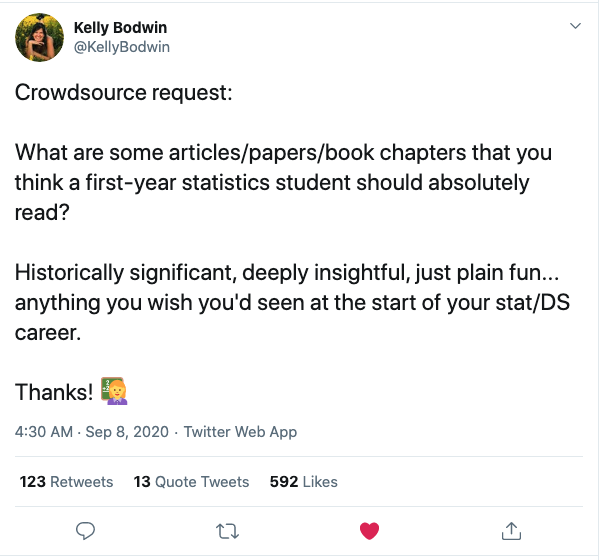
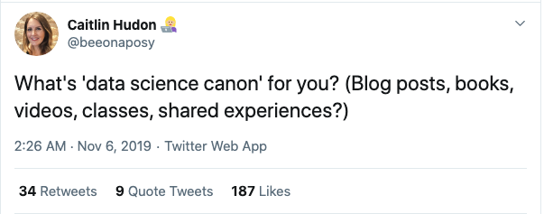

Essential Readings in Data Science
What is considered canon?
Data Science Literature Review
I saw an intriguing question posed on Twitter and some of the responses were illuminating.

Here’s another variant of the question:

Although Data Science has a long history, it’s considered a relatively young field.
This space will be used to document recommended reading for new entrants:
-
Downey, Allen (2016) There is only one test. source
-
Wickham, Hadley (2014) Tidy Data. The Journal of Statistical Software, vol 59. original, update
-
James, G., Witten, D., Hastie, T. & Tibshirani, R. (2014) An Introduction to Statistical Learning with Applications in R. source
-
Shmueli, G. (2010) To explain or to predict? Statistical Science, 25(3), 289-310. source
-
Hernan, M.A., Hsu, J. & Healy, B. (2019) A second chance to get causal inference right: A classification of Data Science tasks. Chance, vol 32(1). source
-
Gelman, A., Pasarica, C. & Dodhia, R. (2002) Let’s practice what we preach: Turning tables into graphs. The American Statistician, vol 56(2). source
-
Scott Formann-Roe (June, 2012) Understanding the Bias-Variance Tradeoff. source
-
Donoho, D (2017) 50 Years of Data Science. Journal of Computational and Graphical Statistics, vol 26(4). source
-
Wilson, G., Bryan, J., Cranston, K., Kitzes, J., Nederbragt, L. & Teal, T.K. (2017) Good enough practices in scientific computing. Plos Computational Biology. source
-
Kevin Markham (2019) 100 pandas tricks to save you time and energy. source
-
Chris Albon’s code snippets. source
-
Howard, J. & Gugger, S. (Aug 4, 2020) Deep Learning for Coders with fastai and PyTorch: AI Applications without a PhD 1st Ed. source
-
Brandon Rohrer (Jan, 2020) End-to-End Machine Learning: Complete Course Catalog. source; second source
-
John Rauser (Dec, 2016) How Humans See Data youtube
-
Broman, K.W. & Woo, K.H. (2018) Data Organization in Spreadsheets. The American Statistician, vol 72(1). source
-
Sculley, D., Holt, G., Golovin, D., Davydov, E., Phillips, T., Ebner, D., Chaudhary, V., & Young, M. (2014) Machine Learning: The High Interest Credit Card of Technical Debt. source
-
3Blue1Brown for Linear Algebra youtube
-
Jenny Bryan. Stat 545: Data Wrangling, Exploration and Analysis with R. source